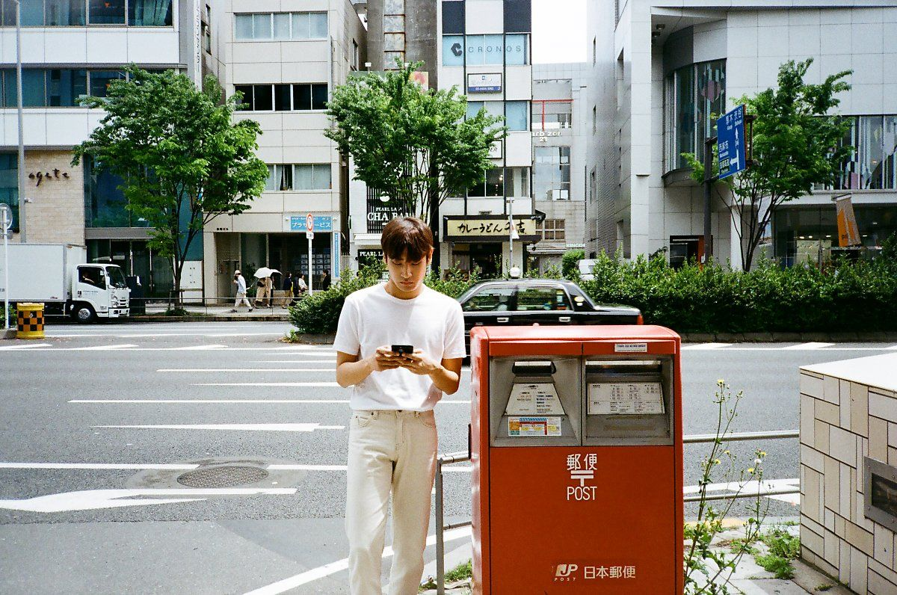

1995년 12월 25일 오전 9시 38분 쌍문동 한일병원에서 3.85kg으로 태어나[18] 돈암동에서 자랐다. 홍대부고 재학 중 아버지의 갑작스러운 퇴직으로 아버지의 뜻에 따라 가족 모두 미국 플로리다 알타몬트 스프링스(Altamonte Springs)로 이민을 갔고, 플로리다 아폽카(Apopka)에서 난농장을 운영했다. 그곳에서 생활하던 중, 19살 본인의 미래에 대해 고민이 많을 시기에, 어릴 때부터 음악에 대한 꿈이 있었던 박재정은 슈퍼스타K5 뉴욕 예선을 보게 되었고, 슈퍼스타K5 우승까지 하게 되었다. 이로써 1년 4개월의 짧은 미국 생활은 마무리 되었다. 
이후 20살에 미니앨범 《STEP 1》 발매 후, 홍대부고 3학년 2학기로 복학하였고, 21살에 단국대학교 생활음악과 15학번[19] 으로 입학하였다. 미국에서 난농장이 잘 되지 않아 경제적 어려움을 겪던 가족 역시 박재정의 슈퍼스타K5 우승을 계기로 모두 한국으로 귀국하게 되었다. 슈퍼스타K5 우승 상금 3억원(세후 약 2억원)은 집 월세, 보증금과 부모님이 운영하는 작은 식당(양재동 일상) 권리금 등으로 썼다고 한다. 어린 나이부터 가장의 책임감을 느끼며 데뷔 후에 줄곧 열심히 활동해왔지만, 그에 비해 큰 주목이나 성과가 따르지 않았고, 2021년 2월 미스틱스토리와 계약 만료로 잠시 활동 중단을 하게 된다.[20] 가수로서의 앞날이 보이지 않아 슬럼프 시기를 겪던 중, 2021년 봄 기적적으로 MSG워너비 블라인드 오디션 이라는 기회가 주어졌고, 절실한 마음과 음색, 노래 실력으로 유야호와 대중들의 마음을 사로잡게 되었다.[21] 이후 가수로서 좋은 행보를 보이고 있다.